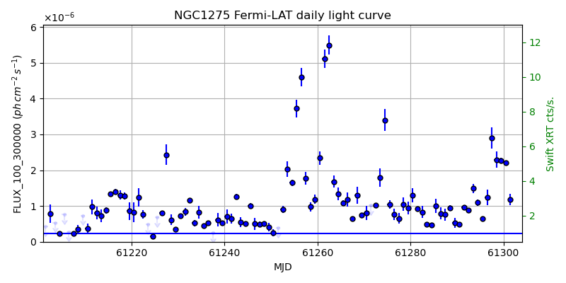
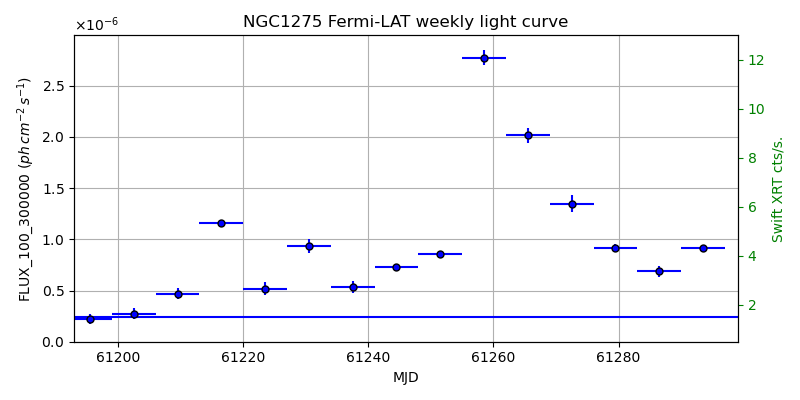
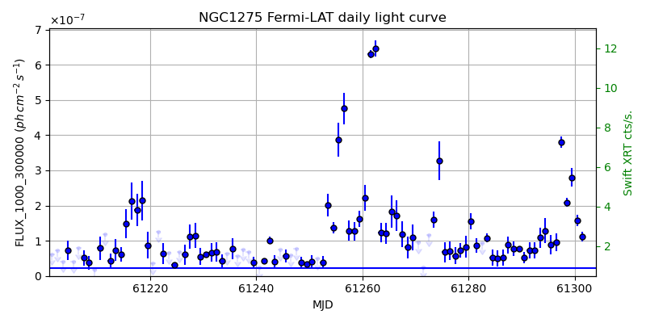
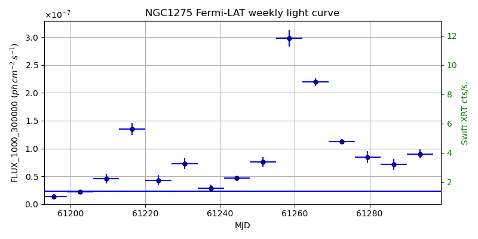

LAT Lightcurve site: https://fermi.gsfc.nasa.gov/ssc/data/access/lat/msl_lc/source/NGC_1275
Swift site: https://www.swift.psu.edu/monitoring/source.php?source=3C84
NED: Query
Time of last update of this page: UT: 2026-09-19 15:13 (MJD: 61302.635)
| Property | Value |
|---|---|
| R.A. | 3:19:48.24 |
| Dec. | 41:30:43.2 |
| z | 0.018 |
| 3FGL SpectrumType | LogParabola |
| 3FGL PL Index | |
| 3FGL Flux_100_300000 | 2.38e-07 1 / (s cm2) |
| 3FGL Flux_1000_300000 | 2.34e-08 1 / (s cm2) |
| 3FGL Flux >200 GeV | 3.81e-11 1 / (s cm2) |
| 3FGL Extrap. Crab >200 GeV | 0.16 |
| 3FGL Flux After EBL Absorption >200GeV | 3.56e-11 1 / (s cm2) |
| 3FGL EBL Crab Fraction >200GeV | 0.15 |

| MJD | dMJD | Flux | dFlux | Frac3FGL | FracCrab>200GeV | EBLFracCrab>200GeV |
|---|---|---|---|---|---|---|
| 61297.50 | 0.50 | 2.90e-06 | 2.97e-07 | 12.21 | 1.97 | 1.84 |
| 61298.50 | 0.50 | 2.30e-06 | 2.35e-07 | 9.65 | 1.56 | 1.46 |
| 61299.50 | 0.50 | 2.26e-06 | 8.08e-08 | 9.50 | 1.53 | 1.43 |
| 61300.50 | 0.50 | 2.20e-06 | 7.60e-08 | 9.24 | 1.49 | 1.39 |
| 61301.50 | 0.50 | 1.18e-06 | 1.52e-07 | 4.97 | 0.80 | 0.75 |

| MJD | dMJD | Flux | dFlux | Frac3FGL | FracCrab>200GeV | EBLFracCrab>200GeV |
|---|---|---|---|---|---|---|
| 61265.50 | 3.50 | 2.02e-06 | 7.62e-08 | 8.47 | 1.37 | 1.28 |
| 61272.50 | 3.50 | 1.35e-06 | 8.27e-08 | 5.66 | 0.92 | 0.86 |
| 61279.50 | 3.50 | 9.16e-07 | 3.67e-08 | 3.85 | 0.62 | 0.58 |
| 61286.50 | 3.50 | 6.87e-07 | 5.69e-08 | 2.89 | 0.47 | 0.44 |
| 61293.50 | 3.50 | 9.12e-07 | 2.39e-08 | 3.83 | 0.62 | 0.58 |

| MJD | dMJD | Flux | dFlux | Frac3FGL | FracCrab>200GeV | EBLFracCrab>200GeV |
|---|---|---|---|---|---|---|
| 61297.50 | 0.50 | 3.80e-07 | 1.64e-08 | 16.23 | 2.62 | 2.45 |
| 61298.50 | 0.50 | 2.09e-07 | 1.37e-08 | 8.93 | 1.44 | 1.35 |
| 61299.50 | 0.50 | 2.80e-07 | 2.70e-08 | 11.96 | 1.93 | 1.80 |
| 61300.50 | 0.50 | 1.58e-07 | 1.56e-08 | 6.74 | 1.09 | 1.02 |
| 61301.50 | 0.50 | 1.12e-07 | 1.32e-08 | 4.78 | 0.77 | 0.72 |

| MJD | dMJD | Flux | dFlux | Frac3FGL | FracCrab>200GeV | EBLFracCrab>200GeV |
|---|---|---|---|---|---|---|
| 61265.50 | 3.50 | 2.19e-07 | 7.24e-09 | 9.37 | 1.51 | 1.41 |
| 61272.50 | 3.50 | 1.12e-07 | 4.09e-09 | 4.79 | 0.77 | 0.72 |
| 61279.50 | 3.50 | 8.43e-08 | 1.05e-08 | 3.60 | 0.58 | 0.54 |
| 61286.50 | 3.50 | 7.18e-08 | 9.51e-09 | 3.07 | 0.50 | 0.47 |
| 61293.50 | 3.50 | 9.03e-08 | 8.23e-09 | 3.86 | 0.62 | 0.58 |
--------------------------------------------------------- Using user-supplied coords: 3:19:48.24 41:30:43.2 2000 --------------------------------------------------------- FLWO UT night of: 2026-09-20 Local Sid. @ Midnight: 23:32 Sunset (-15.0) (local, UT): 19:31 02:31 Sunrise (-15.0) (local, UT): 05:04 12:04 Moonrise (local, UT): Moonset (local, UT): 00:13 07:13 Moon phase: 0.64 --------------------------------------------------------- AzTime LSID UT Obj_el Obj_az Mn_el Mn_az Sep. --------------------------------------------------------- 19:31 19:03 02:31 -0.1 38.0 30.5 184.0 136.1 20:01 19:33 03:01 3.6 41.8 29.7 191.5 136.0 20:31 20:03 03:31 7.9 45.3 28.1 198.7 135.8 21:01 20:33 04:01 12.6 48.5 25.8 205.5 135.7 21:31 21:03 04:31 17.4 51.4 22.9 211.9 135.5 22:01 21:33 05:01 22.5 53.9 19.4 217.8 135.3 22:31 22:03 05:31 27.8 56.1 15.4 223.2 135.1 23:01 22:33 06:01 33.1 58.1 11.0 228.1 134.9 23:31 23:04 06:31 38.6 59.6 6.3 232.6 134.7 00:01 23:34 07:01 44.2 60.8 1.5 236.7 134.5 00:31 00:04 07:31 49.8 61.4 -2.6 240.5 134.3 01:01 00:34 08:01 55.4 61.3 -9.5 244.1 134.1 01:31 01:04 08:31 61.0 60.3 -15.1 247.4 133.8 02:01 01:34 09:01 66.5 57.5 -20.8 250.6 133.6 02:31 02:04 09:31 71.7 51.8 -26.6 253.6 133.3 03:01 02:34 10:01 76.3 40.1 -32.5 256.6 133.0 03:31 03:04 10:31 79.5 17.6 -38.4 259.6 132.7 04:01 03:34 11:01 79.7 346.1 -44.5 262.6 132.4 04:31 04:04 11:31 76.8 322.0 -50.5 265.8 132.1 05:01 04:34 12:01 72.3 309.3 -56.6 269.4 131.8 05:04 04:37 12:04 71.9 308.5 -57.1 269.7 131.8 --------------------------------------------------------- Dark hours >55 deg.: 4.08 srcstart (UT): 2026-09-20 07:59 srcend (UT): 2026-09-20 12:03